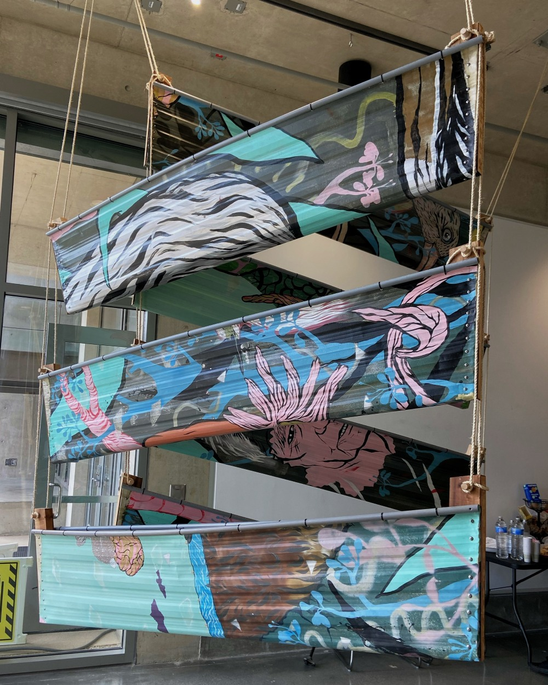
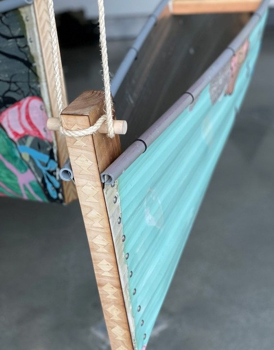

BARCA
Bioarchitecture + Art Revitalization + Chamorro Assemblage
Kendall Frost Reserve Art Rescue
- Role:
- Lead Designer
- Overview:
-
BARCA was a collaborative project to restore and repurpose murals that decorated the exterior of Kendall Frost Reserve's original research trailer. Our goal was to find a way to integrate the panels, or replicas of the mural, within the new building's design.


Ideation:


Final:
We created a series of seven hand-built canoes for the building's façade. Each canoe integrates original mural panels and was shaped with guidance from Mario Borja of the Sakman Chamorro Project. The final pieces were constructed and sealed by hand using materials selected to withstand long-term coastal exposure.

